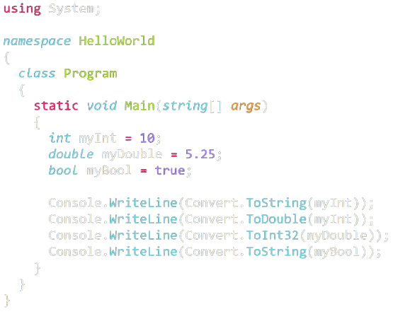

<body>
</body>
<html>
</html>
<h2>
</h2>
<p>
</p>
Exemple de cod C#

Limbajul C#
Pronunțat C-sharp (nu C-hashtag), C# este un limbaj de programare orientat-obiect conceput de
Microsoft la sfârșitul anilor 90. A fost conceput ca un concurent
pentru limbajul Java. Ca și acesta, C# este un derivat al limbajului
de programare C++.
Cine îl folosește?
- Profesii și industrii:
-
Dezvoltatori C #, ingineri de teste de automatizare, ingineri software,
dezvoltatori web.net superiori
-
Folosit de angajatori în tehnologia informației, inginerie, proiectare,
servicii profesionale, management și control al calității
- Organizații majore: Microsoft Intel, Hewlett Packard
- Specializări:
Platforme bazate pe Windows
Ce face ca învățarea lui să fie importantă?
-
C # ajută dezvoltatorii să creeze servicii web XML și aplicații Microsoft.NET
conectate pentru sistemele de operare Windows și internet.
-
Folosit pentru a dezvolta o gamă largă de aplicații software care însoțesc Visual Studio.
-
Singura limbă utilizată de Windows Presentation Foundation (WPF).
-
Caracteristici:
-
Similar cu Java în capabilități
-
Ideal pentru începători
-
Cea mai optimă alegere pentru munca la aplicații Microsoft
Idealurile limbajului:
-
Este destinat să fie un limbaj de programare simplu,
modern, cu scop general, orientat spre obiect
-
Limbajul și implementările acestuia ar trebui să ofere suport
pentru principiile de inginerie software, cum ar fi verificarea
tipului puternic, verificarea limitelor matricei, detectarea
încercărilor de utilizare a variabilelor neinițializate și
colectarea automată a gunoiului. Robustețea software-ului,
durabilitatea și productivitatea programatorului sunt importante.
-
C # este conceput pentru a fi potrivit pentru scrierea aplicațiilor
atât pentru sistemele găzduite, cât și pentru cele încorporate,
de la cele foarte mari care utilizează sisteme de operare sofisticate,
până la cele foarte mici, cu funcții dedicate.
-
Deși aplicațiile C # sunt destinate a fi economice în ceea ce privește
memoria și puterea de procesare, limbajul nu a fost destinat
să concureze direct cu C sau
limbajul de asamblare.